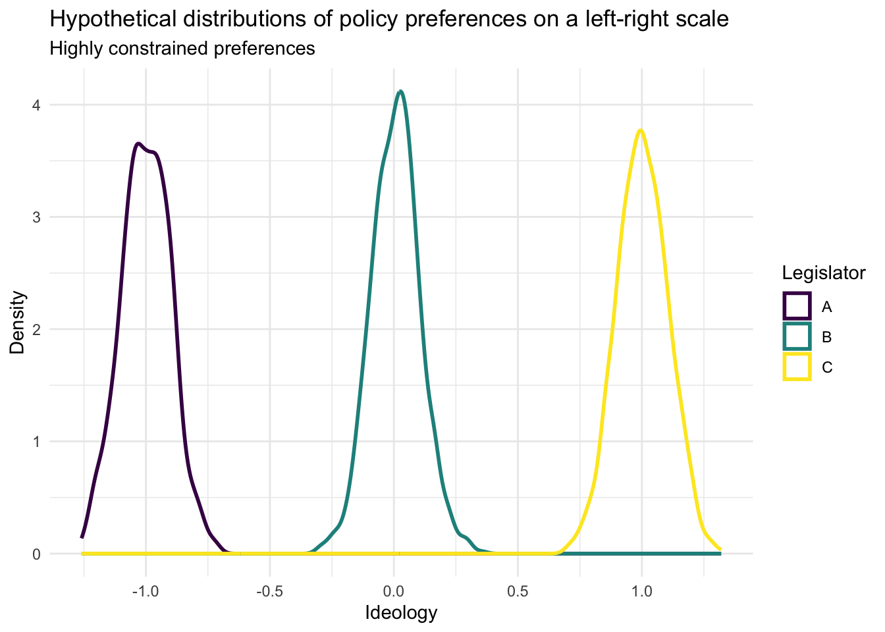
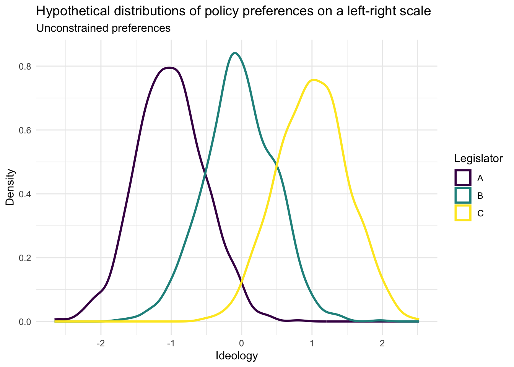

Please, I'm Begging You—Stop Trying to Solve Polarization
Few topics are as often abused by pundits and political scientists as ideology—particularly as it relates to partisan polarization. Political scientists are uncharacteristically eager to problematize polarization and insinuate bold action to ameliorate—or at least avoid amplifying—polarization. In this post, I argue two related points. First, that ideological extremity and ideological consistency are not synonymous, nor even necessarily correlated. Second, scholars should reflect on the popularity of the polarization subfield relative to others when proposing and evaluating interventions. It is not necessarily that polarization is a uniquely concerning phenomenon, it may simply be that more people write articles about (and thus have found more concerns regarding) polarization. Scholars of polarization should carefully consider the potential downsides of anti-polarization interventions.
Two oft-discussed effects of elite polarization include declining legislative productivity and a concomitant decline in the public’s trust in government. Researchers and pundits often propose reforms intended to advantage moderates (often malapropistically referenced as “non-ideological”) candidates over extreme (“ideological” candidates). Such a characterization fundamentally misrepresents what it means to be “ideological”. Breadth—the number of issue areas encompassed by a belief system—and constraint, the correlation between positions related to area i and area j are the defining characteristics of ideology. The extremity of a belief system is incidental as to whether the system constitutes an ideology.
A definition of ideology which includes “extremity” as a necessary condition for “ideology” would be over-complicated, and normatively troubling. Practically, such a definition would make generalizable comparisons of ideology nearly impossible, as extremity is a wholly context dependent descriptor. Belief systems’ status as “ideologies” would vary election to election and time to time; while nothing of value would be gained over an extremity-naïve conception of ideology. Defining ideology on the basis of extremity would describe the mainstream of political opinion at any given time not only as the most popular strain of thought, but as the default political position—rhetorically divorced from the unsavory domains of dishonest ideologues to its left and right. Ideas from outside the status-quo are de-legitimized—not through critique of their programmatic content but by a semantic sleight of hand.
Figure 1

Such is the political world created by sloppy application of words like “ideology” and “moderation”. These words are not antonyms. Rather, “ideology” is a noun and “moderation” an adjective which can sometimes be used to describe an ideology! Pointing this out is not (only) pedantry, but has important implications for the way polarization is (or should be) addressed. Figure 1 represents the distributions of three legislators’ issue preferences along a one-dimensional left-right scale. The mean of distributions \(A\), \(B\), and \(C\) are -1, 0, and 1 respectively. Each distribution describes an ideology: one left, one right, one between. Though centrist, candidate \(B\)’s belief system is precisely as constrained as \(A\) or \(C\)—the standard deviation of each distribution is .1.
Assume polarization causes gridlock because the distributions of polarized legislators’ preferences do not overlap and suppose a reform is introduced to favor moderate candidates over extreme candidates. \(A\) loses their election to a candidate with \(B\)’s issue preferences. Assuming \(C\) retains veto power, the reform has done little to ameliorate gridlock—there is no more overlap between \(B\) and \(C\) than between \(A\) and \(C\). The means may be closer, but they still do not agree on any single issue.
This is not to say that reforms cannot reduce gridlock, only to illustrate that a reduction in polarization does not guarantee a reduction in harm resulting from polarization. Scholars should consider not just “mean ideology” but the shape of actors’ preference distributions. In a legislature populated by less ideological voters (who have much more variable ideological preferences) as depicted in Figure 2, a reform that removed \(A\) or \(C\) would indeed be likely to reduce gridlock, though the legislators’ mean ideology are identical to those in Figure 1 each distribution is much wider. If scholars focus narrowly on mean preferences or other convenient, single-value descriptions of ideology (like self-placements or NOMINATE scores) there is no way to know if our world more closely resembles Figure 1 or Figure 2.
Figure 2

The volume of polarization-centric work has the potential to induce myopia in social scientists, causing them to overestimate the importance and centrality of polarization as a sinister independent variable from which follows so many political ills. Polarization may be a fundamental problem of American politics, or it may just be the subfield in which the most researchers look for problems. In centering polarization and treating it as a first-order normative concern, researchers may overlook or obfuscate other problems in our politics. Even if advantaging PACs would reduce polarization, it does not follow that such a reform would improve the political climate of the U.S.—to say nothing of the material outcomes produced by our political system.